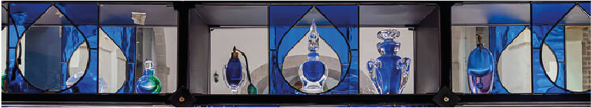
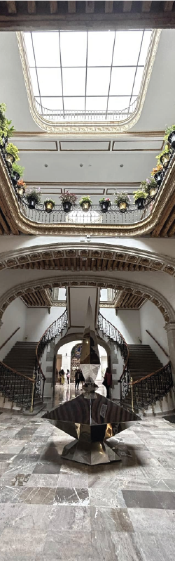

MUPE

El MUPE se encuentra dentro de una antigua casona porfiriana ubicada en la calle de Tacuba 12, una de las vialidades más antiguas e históricas de la Ciudad de México. Esta calle originalmente formó parte de la antigua calzada de Tlacopan en tiempos prehispánicos, una ruta que conectaba Tenochtitlán con el poniente del valle.
La construcción actual del edificio data de finales del siglo XIX, durante el Porfiriato, época en la que muchas construcciones del Centro Histórico adoptaron influencias francesas y europeas. La casona presenta características típicas de la arquitectura porfiriana:
- fachada ornamentada,
- balcones de herrería,
- patios interiores,
- grandes ventanales,
- y detalles eclécticos con influencia afrancesada.
A lo largo de su historia, el inmueble tuvo distintos usos:
- residencia de familias acomodadas,
- fábrica de banderas y uniformes militares,
- sastrería llamada “La Principal”,
- estudios fotográficos,
- consultorios y oficinas comerciales.
Uno de los aspectos más interesantes es que el museo utiliza el espacio arquitectónico como parte de la experiencia sensorial: los patios, corredores y habitaciones antiguas ayudan a crear una atmósfera elegante y nostálgica relacionada con el mundo del perfume y la memoria olfativa.
Además, la calle Tacuba fue conocida durante muchos años como “la calle de los perfumes”, debido a la gran cantidad de perfumerías y boticas tradicionales que existían en la zona, por lo que el museo también funciona como una recuperación histórica del contexto urbano del Centro Histórico.
